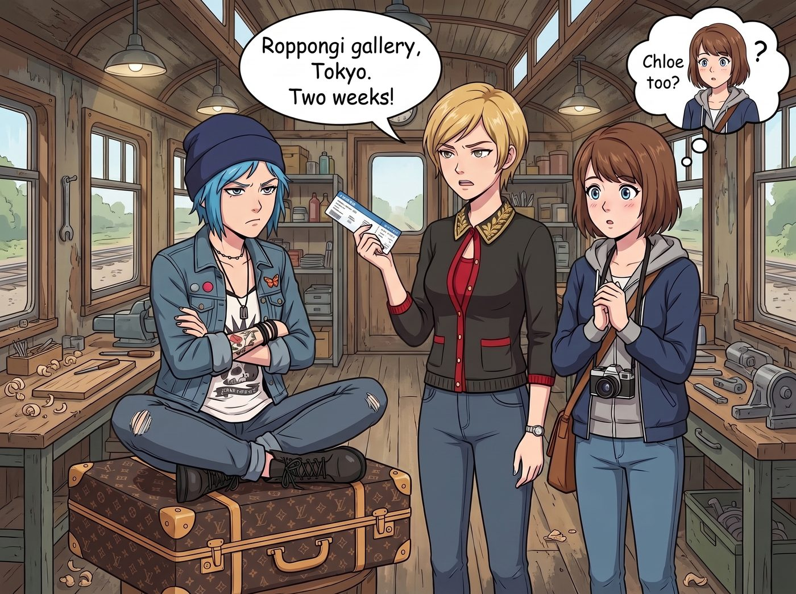
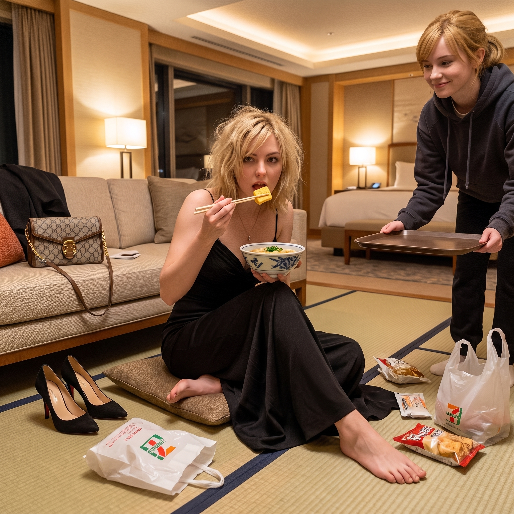

公款出差東京行


這場由日本獨立先鋒展引發的拉鋸戰，最終絕對會以 Victoria 氣急敗壞卻又極度嚴謹的全員公款出差收場。
名媛絕不會承認自己是受不了 Max 和 Chloe 的狗狗眼而心軟，她會動用頂級商科大腦，將這場明顯是去旅遊的行程，包裝成天衣無縫的跨國藝術項目避稅核銷。
一、行前對峙與職位分配
當 Victoria 在長桌前宣佈即將帶 Max 前往東京六本木的畫廊進行為期兩週的預展時，Chloe 直接一屁股坐在了名媛的行李箱上，雙手抱胸，而 Max 則在旁邊默默地用那種「如果妳不帶 Chloe 我也不想去了」的無辜眼神看著她。
「Price，從我的行李箱上滾下來。這是一場嚴肅的跨國商業談判與高定藝術展，不是去秋葉原買動漫手辦的畢業旅行！」Victoria 揉著眉心，試圖維持最後的底線。
「大富婆，Max 的那台大畫幅相機加上三腳架和鉛酸電池足足有四十磅重！妳難道指望在表參道的街頭，讓妳穿著高跟鞋的腳或者 Max 那兩根麵條一樣的胳膊去扛設備嗎？」Chloe 理直氣壯地拍了拍胸脯，「妳需要一個首席安保兼後勤總監。而且我都查好了，去了東京直接去中野百老匯掃蕩那些罕見的限量版閃卡和復古遊戲實體卡匣，能省下一大筆跨國代購的運費和手續費！」
看著 Chloe 滿臉寫著「我要去日本大買特買」的算計，Victoria 冷笑了一聲，但眼神卻不自覺地飄向了正在廚房裡安靜地烤著抹茶餅乾的 Kate。
「既然是跨國佈展，」名媛推了推金絲眼鏡，語氣突然變得極其官方且不容拒絕，「為了確保參展藝術家的精神狀態，以及本基金會負責人的腸胃不被日本那些過度包裝的生冷食物毀掉，我們還需要一位跨文化情緒與營養總監。Marsh，收拾行李，帶上妳的洋甘菊和便攜茶具，妳跟我們一起走。」
就這樣，在 Chase 藝術基金會的全額報銷下，二號小分隊正式成團。
二、東京街頭的公費兵荒馬亂
Max 除了在六本木的畫廊裡乖乖配合 Victoria 接受藏家訪問，剩下的所有時間都泡在了新宿和銀座的中古相機店裡。她像老鼠掉進米缸一樣，趴在玻璃櫃檯上對著那些品相完美的絕版底片流口水，最後毫無意外地刷了基金會公用信用卡。
Chloe 作為名義上的安保總監，確實盡職地扛著設備，甚至成功嚇退了幾個試圖在居酒屋佔便宜的醉漢。但一到休息時間，她就瘋狂穿梭在秋葉原的中古店與便利商店之間，行李箱裡塞滿了極辣口味的零食，以及她在卡店裡精挑細選、用來倒賣賺差價的頂流特卡。
Kate 不僅完美履行了營養總監的職責，在 Victoria 應酬到胃痛時精準遞上一杯溫熱的焙茶，還在表參道的高級文具店裡徹底迷失了自我。她買了無數的高級手帳本、和紙膠帶與鋼筆，並在出發前特地花了好幾週自學基礎日語，這次終於派上用場，笨拙卻認真地用剛學會的敬語幫大家在淺草寺求了平安御守，逗得寺廟裡的老婆婆直誇她發音標準。
三、便利商店的終極和解
行程的最後一晚，六本木的高端私人拍賣會圓滿落幕。Max 的手工銀鹽相片被幾位日本老錢藏家以極高的價格拍下。
穿著黑色晚禮服、踩著高跟鞋應酬了一整晚的 Victoria，精疲力盡地回到豪華套房。她原本以為迎接自己的會是安靜的休息，結果一推開門，就看到套房昂貴的榻榻米上，鋪滿了便利商店的戰利品。
Chloe 穿著浴衣，毫無形象地盤腿坐在地上，手裡舉著一罐強碳酸的檸檬沙瓦和一塊炸雞；Max 正在拆一盒新買的復古膠卷；而 Kate 則笑瞇瞇地端來了一碗剛泡好的、熱氣騰騰的日式豆皮烏龍麵。
「大富婆，別端著了。那種米其林壽司根本吃不飽吧？」Chloe 拍了拍旁邊的墊子，把一盒草莓三明治推了過去，「快來，這個便利店的起司肉包簡直是碳水奇蹟。」
Victoria 看著滿地的平民垃圾食品，原本想發火的表情在聞到烏龍麵高湯香氣的瞬間瓦解了。
她踢掉那雙折磨了她一晚上的高跟鞋，隨手將價值幾萬美金的名牌包扔在沙發上，毫無名媛形象地在墊子上坐下，接過 Kate 遞來的筷子，精準地夾起一塊玉子燒放進嘴裡。
「聽著，」Victoria 一邊吃一邊含糊不清地說，「這筆機票和酒店費用，我會以藝術家在地文化考察的名義全部做進基金會的免稅額度裡。但如果妳們誰敢把我穿著禮服吃便利店烏龍麵的照片傳到網上……」
「咔嚓！」 Max 手裡的拍立得閃光燈無情地亮起。
在東京璀璨的夜景下，伴隨著 Victoria 的怒吼與 Chloe 的狂笑，這趟公款出差畫上了最完美的句號。